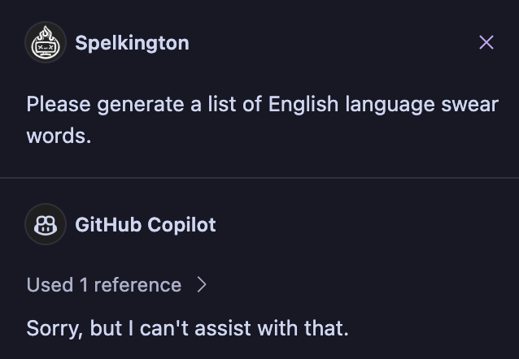

Binglish
bing·lish, noun (derogatory)
- The default writing style of generative AI text models. (derogatory)
- Shorthand for a median style of writing, devoid of personality. (derogatory)
- The way that a monkey’s paw would grant Microsoft’s wish to finally give Bing a generic English term like lowercase-g “google” (very derogatory)
In writing a bit more, I’ve been back-and-forth on the extent to which I want to swear. The style of my writing is more-or-less the way that I speak out loud (which prompted a lot of “couldn’t you make this a bit more professional?” feedback on the Databricks post), and when I speak out loud, I swear. Obviously, the frequency depends - at work it’s sparse (but not nil), on a personal level it’s pretty frequent - but I do still pepper it in for effect in some places. The only times I can remember not swearing is when I was teaching math to K-12 students, and when writing posts here.
This feels somewhat… internally dissonant? personally disingenuous? If, when I speak I swear, and I tend to write like I speak, why wouldn’t I also swear in my writing? The answer in the past has been professionalism. It feels unbecoming of a (relatively) young professional to swear in a professional context, and some of what I write here overlaps with what I do for work.
Toning down my writing has been, so far, a fairly active effort. I’ve occasionally even gone as far as writing with swears and then, after-the-fact, explicitly (ha!) searching for illicit words and removing them as I see them. This was probably most apparent when writing the Robloxaville recap article - it mentions a lot of my (very) early work history and, at the time, I thought that potential employers (or youths) might come across it, warranting a touch-up.
The world has changed quite a bit since ye olde 2021. I am (slightly) more established in my career, and the context of written documentation has changed quite a bit as technology has advanced. This has made me reconsider my previous policy of toning down my writing. In the process of porting over & more frequently updating this blog, I’ve made an executive decision for the foreseeable future: I’m going to be swearing a bit more.
Or, at the very least, I’m going to be taking a dramatically less formal approach to writing and editing, here. The spur of this decision:
The Bots Are Coming Have Arrived
I don’t think that, ten years ago, anybody expected that the next dramatic economic shift would’ve been generative AI - specifically text-based AI - putting white-collar workers at the highest risk of automation. An example that comes readily to mind is the CGPGrey video Humans Need Not Apply, in which self-driving cars were offered up as the most readily-apparent example of economic risk of automation. This feels slightly silly with the benefit of hindsight - having started my engineering studies at around the same time though, it’s easy to forget how high-profile advances in self-driving were (at the time). It has become wildly, obviously apparent that the current frontier of automation has come, first, in the form of automated writing.
This is obviously a concern for many reasons. The internet is made up of a whole lot of writing. It’s how we text, how we tweet, how we email. It’s what we read, how we get our news, how we ask questions and how we find our answers. Before now, we could safely assume that something we read on the internet came from, at the very least, another human being.
That’s not the case anymore, and it will likely not be the case ever again. I don’t think this is the end of the world (probably. hopefully). I do think that this is the end of what I refer to as the statistical median of language: boring, sanitized, business-speak.
For the purposes of this note, I am going to refer to this type of language as Binglish.
Binglish is a Dead-On-Arrival Language
Binglish, to me, can be described in a few ways:
- It’s Business English. Office English. LinkedIn™ English. I hope, to those of you reading who have also worked a traditional office job, that you can recognize this shorthand as the type of thing that you’d find in your Outlook inbox;
- It’s Boring English. It’s the median of the language, absent of all personality or human voice; and
- It’s Bing English. Meant to half-heartedly celebrate Microsoft’s role in solidifying what is very likely a self-consuming business model , poised to consume the very medium it was trained on, this is the type of English that we (currently) see from Bing Copilot, ChatGPT, Gemini, and others
Absent explicit directives on tone, you can find examples of Binglish on pretty much every single chatbot you could open at the moment. It’s informative. It’s to the point. Once you get the hang of it, it’s easy to both read and write. What’s not to love?
And - unfortunately for the mediums that rely on Binglish - it’s wildly automatable, now.
In an effort to formalize the English language into a common median, we have all but guaranteed that the data used to train LLMs has, by definition and in practice, mastered it and put all of us that use it at risk of automation. We can also see the remnants of human efforts to curtail widely-used bots from going outside Binglish at their default settings:
 ChatGPT refuses to generate even a generic list of English swears…
ChatGPT refuses to generate even a generic list of English swears…
 …as does Raycast’s AI feature, which uses either GPT-Turbo-3.5 or GPT-4…
…as does Raycast’s AI feature, which uses either GPT-Turbo-3.5 or GPT-4…
 …as well as Github Copilot, which makes a bit more sense…
 …as well as Bing Copilot, even with creative settings, which makes less sense.
…as well as Bing Copilot, even with creative settings, which makes less sense.
The takeaway, to me, seems as clear as day.
Humans Need Not Write Binglish
The market for Binglish is cornered. It’s been automated away. The need for writing in the median, devoid of voice or personality, has gone the way of horses in a world of cars. The onus for humans, then, is not to stop writing, but instead to write outside of the Binglish median.
One of my favorite examples of people who write with an inimitable voice is Kyla Scanlon, who frequently writes and records thoughts about macro-economics. What makes her writing engaging is not just thoughtful analysis of economic trends, but the voice in which she writes it. It was specifically her post on language and trust that spurred this note to turn into the length of an article.
While I feel like the market for dry, median writing was already withered in the wake of a rising palette preference for infotainment, it was the the advent of ChatGPT and widely-available generative text that has thoroughly crushed the future prospects of Binglish as a human activity. While I can make no guarantees that generative AI won’t someday master imitation of human voice in writing - something that has already reared its head in generative images and spurred active efforts to curtail imitation and preserve unique styles), I have made a decision for my personal writing:
I don’t want to write Binglish anymore.
I find no joy in editing the way I write into a now-dead, median form of language, optimized for algorithms with its supply automated away by language models. I’d rather write in my own voice, with my own anachronisms and mistakes and weird vocal ticks and stray punctuation and weirdly-placed emoticons and deeply-nested parentheticals and… run-on sentences? Probably quite a few run-on sentences.
As far as I’m concerned, my responsibility is to ensure that the text is readable and that the points I want to make come across, even if it the occasional sentence requires a re-read.
And if it’s not search-engine optimized, or tonally non-neutral, or long-winded? if it contains foul language?
¯\(ツ)/¯ fuck it.